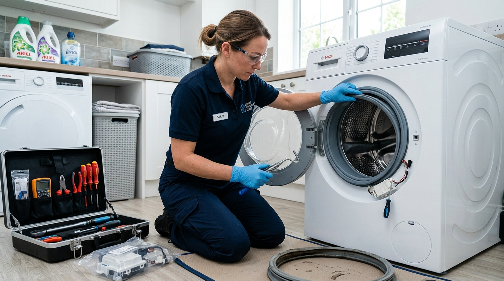

Altus markası, yerli üretimin gücü ve dayanıklı ev teknolojileri ile Türkiye'deki birçok evde ilk tercihler arasında yer almaktadır. Çamaşır makinelerinden buzdolaplarına, bulaşık makinelerinden derin donduruculara kadar hayatı kolaylaştıran pek çok ürün sunar.
Ancak yoğun kullanım ve zamanın getirdiği doğal yıpranmalar sonucu cihazlarda teknik arızalar meydana gelebilir. İşte bu noktada güvenilir bir teknik destek almak büyük önem taşır. Sertler Soğutma, bölgedeki tüm beyaz eşya sahiplerine hızlı ve garantili çözümler sunmaktadır.
Ev ortamında sürekli çalışan cihazların aniden durması veya arızalanması günlük yaşam ritminizi doğrudan olumsuz etkiler. Yiyeceklerin bozulma riski ya da biriken yıkanmamış giysiler stresli bir süreç yaratabilir.
Bu tür durumlarda profesyonel bir müdahale almak için zaman kaybetmemeniz gerekir. Tarsus Altus Servisi alanında yılların birikimiyle çalışan firmamız, sorunlarınızı aynı gün içerisinde çözmek için harekete geçer.
Altus beyaz eşyaların mekanik ve elektronik donanımları kendine has bir yapıya sahiptir. Bu nedenle cihazlara yetkisiz veya tecrübesiz kişilerce müdahale edilmesi çok daha büyük hasarlara zemin hazırlayabilir.
Uzman teknisyen kadromuz, Altus ürünlerinin tüm donanımsal mimarisine tam anlamıyla hakimdir. Sertler Soğutma bünyesinde çalışan ustalarımız, arızayı kökünden saptayarak en doğru onarım adımını kararlılıkla uygular.
Müşteri memnuniyetini her şeyin üzerinde tutan kurumsal yaklaşımımızla fark yaratıyoruz. Her servis çağrısında cihazınızın güvenlik ve performans standartlarını korumayı hedefliyoruz.
Güvenilir bir servis arayışındaysanız doğru yerdesiniz. Tarsus Altus Servisi hizmetlerimiz kapsamında cihazlarınızı ilk günkü çalışma verimine kavuşturmayı garanti ediyoruz.
Onarım sürecinin her aşamasında şeffaf iletişim kurarak tarafınızı bilgilendiriyoruz. Sertler Soğutma ile çalışarak arızalı eşyalarınızı yeniden güvenle ve uzun yıllar boyunca kullanabilirsiniz.
Gezici mobil servis araçlarımız Tarsus'un en uzak mahallelerine kadar kesintisiz ulaşım sağlamaktadır. Tarsus Altus Servisi taleplerinizde bir tık ya da bir telefon kadar yakınınızdayız.
Ev teknolojilerinizin aksamadan çalışması için günün her anında destek sunmaya hazırız. Sertler Soğutma kalitesini tercih edin, cihazlarınızın ömrünü uzatın.
Beyaz eşyalarınızdaki en ufak performans kaybında dahi uzman desteği almanız olası büyük maliyetlerin önüne geçer. Tarsus Altus Servisi ekibimiz, bakım ve onarım işlerinde her zaman yanınızdadır.
Tarsus Altus Servisi ile A Kalite Teknik Destek
A kalite teknik destek anlayışı, sadece arızalı bir parçayı değiştirmekle sınırlı değildir. Cihazın genel durumunu analiz etmek ve gelecekte oluşabilecek arızaları öngörmek bu sürecin bir parçasıdır.
Tarsus Altus Servisi alanındaki geniş deneyimimizle, Altus marka ürünlerinize eksiksiz bir teknik destek sunuyoruz. Sertler Soğutma olarak, işlemlerimizde uluslararası kabul görmüş standartları uyguluyoruz.
Teknik destek sürecinde ilk olarak adresinize ulaşan personelimizin profesyonelliği ön plana çıkar. İşini tutkuyla yapan ustalarımız, evinizin hijyenine saygı göstererek çalışmalarını yürütür.
Cihaz üzerindeki arıza tespiti yapılırken modern test araçlarından ve ölçüm cihazlarından faydalanılır. Tarsus Altus Servisi hizmetlerimizde deneysel tamir metodlarına asla yer verilmez.
Altus buzdolabınız soğutmuyorsa, çamaşır makineniz gürültülü çalışıyorsa ya da bulaşık makineniz su boşaltmıyorsa net çözümler üretiyoruz. Arızanın kaynağı ne olursa olsun Sertler Soğutma ekibimiz problemi kısa sürede giderir.
A kalite hizmet standartlarımız doğrultusunda yapılan her işlem kayıt altına alınır. Müşterilerimize verilen servis formları yapılan müdahalelerin ve kullanılan parçaların kanıtıdır.
Tarsus Altus Servisi ihtiyacınızda bize başvurduğunuzda, sadece anlık arıza giderilmez. Cihazın genel çalışma parametreleri gözden geçirilerek gerekli ince ayarlar tamamlanır.
Düzenli bakımı yapılmayan cihazların enerji tüketimi artarken kullanım ömrü hızla kısalır. Sertler Soğutma, A kalite servis hizmetiyle elektrik ve su faturalarınızı da koruma altına alır.
Bölgede yıllardır sürdürdüğümüz kesintisiz çalışmalar, firmamızın güvenilirliğini en üst seviyeye çıkarmıştır. Her müşterimize aynı özen ve yüksek kalite standartlarıyla yaklaşım gösteriyoruz.
Arızalanan Altus eşyalarınız için tedirgin olmanıza gerek kalmadı. Tarsus Altus Servisi konusunda uzman ekibimiz cihazınızı en kısa sürede mükemmel duruma getirecektir.
Teknik ekibimiz Altus markasının piyasaya sunduğu en yeni akıllı modeller dahi olmak üzere tüm ürün gruplarında eğitime sahiptir. Sertler Soğutma ile her zaman güncel ve modern servis hizmeti alırsınız.
Kaliteli hizmet anlayışımız sayesinde Tarsus genelinde en çok tavsiye edilen servis konumunda bulunmaktayız. Tarsus Altus Servisi için hemen randevunuzu oluşturabilirsiniz.
Sertler Soğutma Altus Arıza ve Bakım Merkezi
Arıza ve bakım merkezi olarak faaliyet gösteren firmamız, Altus ürünlerinin tüm modellerine uygun geniş bir yedek parça stokuyla çalışır. Sertler Soğutma, arıza anında hızlı çözümler üretebilmek adına teknik altyapısını sürekli güncel tutmaktadır. Evinizdeki farklı marka soğutucular veya şehir dışındaki evleriniz için kaliteli bir Adapazarı Altus servisi gereksiniminde uzman ekiplerden destek alabilirsiniz.
Gelişmiş servis merkezimiz sayesinde cihazlarınızın onarım süresi minimum seviyeye indirilir. Tarsus Altus Servisi talebiniz bize ulaştığı andan itibaren tüm süreç sistemli bir şekilde işler.
Buzdolaplarında gaz kaçakları, kompresör arızaları veya dijital kart sorunları merkezimizde profesyonelce çözülür. Sertler Soğutma uzmanları, cihazın tüm aksamlarını titizlikle teste tabi tutar.
Çamaşır makinelerinde tambur bilyalarının aşınması veya kazan düşmesi gibi zorlu mekanik problemler de merkezimizde giderilmektedir. Tarsus Altus Servisi ekibimiz, en zorlu arızaları bile kolaylıkla çözer.
Bulaşık makinelerinde yıkama motoru bloke olması veya ısıtıcı rezistans yanması durumlarında anında parça değişimi yapılır. Sertler Soğutma, orijinal ve uyumlu parçalarla cihazınızın ilk günkü gücüne dönmesini sağlar.
Servis merkezimiz sadece tamir yapmaz, aynı zamanda kapsamlı periyodik bakım hizmetleri sunar. Tarsus Altus Servisi bakımları sayesinde cihazlarınız aniden bozulup sizi yarı yolda bırakmaz.
Periyodik bakımı yapılan cihazlarda gözle görülür bir performans artışı yaşanır. Sertler Soğutma tarafından temizlenen filtreler ve kontrol edilen motorlar cihazın rahat çalışmasını sağlar.
Kurutma makineleri ve derin dondurucular da bakım merkezimizin uzmanlık alanına girmektedir. Her bir ürün grubu için özel hazırlanmış bakım protokollerimiz harfiyen uygulanır.
Tarsus Altus Servisi çağrı merkezimiz günün her saatinde gelen talepleri kaydeder ve ilgili teknik ekibe iletir. Zaman kaybetmeden adrese ulaşan ekiplerimiz sorunu yerinde çözmeyi amaçlar.
Yerinde onarımı mümkün olmayan ağır arızalı cihazlar özel taşıma ekipmanlarımızla merkezimize alınır. Sertler Soğutma, nakliye sırasında cihazınızın zarar görmemesi için tüm tedbirleri alır.
Onarımı tamamlanan ve test aşamalarını başarıyla geçen cihazlar adresinize geri getirilerek montajı yapılır. Tarsus Aeg Servisi ve Altus servis süreçlerinde sunduğumuz bu titizlik müşteri memnuniyetimizi artırır.
Altus arıza ve bakım ihtiyaçlarınızda uzman bir kurumsal yapıyla çalışmak isterseniz bize hemen ulaşabilirsiniz. Tarsus Altus Servisi çözümlerimiz ile cihazlarınız güvenli ellerdedir.
Uygun Fiyatlı Tarsus Altus Servisi Hizmetleri
Altus Cihazınız İçin Hemen Randevu Alın
Orijinal yedek parça ve 1 yıl servis garantisiyle Tarsus genelinde aynı gün adresinizdeyiz.
Ev bütçesini zorlamadan kaliteli servis hizmeti almak her tüketicinin en doğal hakkıdır. Sertler Soğutma, sunduğu yüksek kaliteli servis hizmetlerini en makul maliyetlerle müşteriyle buluşturur.
Tarsus Altus Servisi arayışınızda bütçenize uygun çözümler sunarak cebinizi koruyoruz. Fiyat politikamız tamamen şeffaf ilkeler üzerine inşa edilmiştir.
Tamir veya bakım işlemleri başlamadan önce cihazınızın arıza durumu detaylıca analiz edilir. Yapılacak harcamalar ve parça bedelleri tarafınıza açıkça beyan edilir.
Müşterimizin onayı alınmadan Tarsus Altus Servisi kapsamında hiçbir ücretli işlem başlatılmaz. Bu sayede işlem sonunda sürpriz faturalarla karşılaşma riskiniz tamamen ortadan kalkar.
Arızasız parçaların değiştirilmesi gibi gereksiz maliyet çıkaran uygulamalara firmamızda kesinlikle izin verilmez. Sertler Soğutma, dürüst servis ilkesinden asla taviz vermemektedir.
Piyasa şartlarına kıyasla son derece makul bir seviyede tuttuğumuz servis ücretlerimiz müşterilerimizden takdir toplamaktadır. Tarsus Altus Servisi imkanlarımızdan herkesin rahatça yararlanmasını hedefliyoruz.
Orijinal yedek parçaları doğrudan tedarik kanallarımız aracılığıyla uygun maliyetlerle temin ediyoruz. Bu avantajı doğrudan müşterilerimize yansıtarak onarım maliyetlerini düşürüyoruz.
Ayrıca düzenli bakım yaptırarak büyük arıza masraflarının önüne geçebileceğinizi hatırlatmak isteriz. Sertler Soğutma periyodik bakım paketleri uzun vadede ciddi tasarruf sağlar.
Ekonomik durumunuz ne olursa olsun Altus cihazlarınızı kalitesiz tamircilere emanet etmek zorunda değilsiniz. Tarsus Altus Servisi kalitesini bütçe dostu koşullarla evinize getiriyoruz.
Tüm kredi kartlarına ödeme kolaylığı ve esnek ödeme seçenekleri sunarak süreçleri kolaylaştırıyoruz. Sertler Soğutma, müşteri odaklı finansal çözümleriyle her zaman yanınızdadır.
İndirimli bakım günlerimiz ve çoklu cihaz servis fırsatlarımız hakkında bilgi almak için çağrı merkezimizi arayabilirsiniz. Tarsus Altus Servisi ile hem kaliteli hem ekonomik teknik destek mümkündür.
Cihazlarınızın değerini korumak ve makul harcamalarla ilk günkü performansına kavuşturmak için bizimle iletişime geçin. Sertler Soğutma her zaman bütçenizi ve cihazınızı düşünür.
Sertler Soğutma Farkıyla Altus Tamir Süreci
Sertler Soğutma, Altus ürünlerinin tamir sürecini tamamen profesyonel adımlarla yönetir. Sıradan ve geçici çözümler yerine kalıcı, garantili ve güvenilir metodlar uygularız. Beyaz eşya teknolojilerinde İtalyan mühendisliği cihazlarınız için profesyonel bir Adapazarı Ariston servisi arayışınız varsa yetkin servis desteği almanız büyük önem taşır.
Tamir sürecimiz, Tarsus Altus Servisi talebinizi çağrı merkezimize iletmenizle birlikte başlar. Müşteri temsilcimiz arızanın belirtilerini not ederek en yakın mobil ekibi adresinize yönlendirir.
Adresinize gelen Sertler Soğutma teknisyenleri öncelikle cihaz üzerinde detaylı bir fiziki ve elektronik inceleme yapar. Dijital arıza tespit cihazları yardımıyla problemin kaynağı netleştirilir.
Arızanın sebebi belirlendikten sonra müşteri detaylı şekilde bilgilendirilir. Tamir adımları ve maliyet hususu aktarılarak onayınız talep edilir.
Onay vermeniz durumunda Tarsus Altus Servisi tamir işlemi hemen başlatılır. Gezici araçlarımızda bulunan orijinal yedek parçalar sayesinde onarımların çoğu ilk ziyarette tamamlanır.
Değiştirilen her parçanın montajı Altus standartlarına uygun olarak gerçekleştirilir. Sertler Soğutma ustaları, vidalama ve sızdırmazlık işlemlerini büyük bir titizlikle yürütür.
Tamir tamamlandıktan sonra cihaz hemen teslim edilmez. Belirli test programlarında çalıştırılarak soğutma, ısıtma, su alma veya sıkma fonksiyonları kontrol edilir.
Cihazın sorunsuz çalıştığı test edildikten sonra Tarsus Altus Servisi garanti belgesi ve servis formu düzenlenir. Yapılan işçilik ve takılan parça resmi kayıt altına alınır.
Teknisyenlerimiz, cihazınızı daha verimli kullanmanız ve benzer arızalarla karşılaşmamanız için size kullanım tavsiyeleri verir. Sertler Soğutma müşteri odaklı hizmetini bu şekilde tamamlar.
Ev veya iş yerinizde çalışma alanı temiz bırakılır. Müşteri memnuniyeti ve temiz işçilik kurumsal kültürümüzün temelini oluşturur.
Gelecekte yaşanabilecek olası sorularınız için Tarsus Altus Servisi destek hattımız her zaman açıktır. Müşteri temsilcilerimiz servis sonrası süreçlerde de yanınızda yer alır.
Altus beyaz eşya tamirinde profesyonel bir süreç yaşamak istiyorsanız tercihinizi bizden yana kullanabilirsiniz. Sertler Soğutma farkını yaşamak için hemen randevu alabilirsiniz.
Tarsus Altus Servisi Mobil Ekiplerimizin Avantajları
Mobil servis araçlarımız, arızalara jet hızıyla müdahale etmemizi sağlayan en büyük gücümüzdür. Tarsus Altus Servisi hizmetlerimizi mobil ekiplerimiz aracılığıyla ayağınıza kadar getiriyoruz.
Her bir mobil aracımız, adeta yürüyen bir teknik servis atölyesi gibi donatılmıştır. İçerisinde en sık ihtiyaç duyulan Altus yedek parçaları ve gelişmiş tamir ekipmanları mevcuttur.
Sertler Soğutma mobil ekipleri, Tarsus’un tüm mahalle ve sokaklarına hakimdir. Çağrı geldiği anda navigasyon sistemimiz vasıtasıyla en kısa sürede adresinize ulaşılır.
Zamanınızın ne kadar kıymetli olduğunun farkındayız. Bu nedenle Tarsus Altus Servisi randevularımızda belirtilen saatlere tam hassasiyetle uyum gösteriyoruz.
Günlerce servis beklemek veya cihazınızı günlerce tamircide bırakmak zorunda kalmazsınız. Sertler Soğutma mobil ekipleri arızaların büyük kısmını aynı gün evinizde çözer.
Acil buzdolabı arızalarında yiyeceklerin bozulmaması için mobil ekiplerimize öncelik verilmektedir. Tarsus Altus Servisi ile acil durumlarınıza anında müdahale edilmektedir.
Ekiplerimizde görev alan tüm personellerimiz güler yüzlü, saygılı ve işinde uzmandır. Evinize konuk olan teknisyenlerimiz güvenlik ve nezaket kurallarına tam uyar.
Mobil araçlarımızın mevcudiyeti sayesinde nakliye masrafları da ortadan kalkmaktadır. Sertler Soğutma, işlemleri yerinde çözerek ekstra taşıma gideri oluşmasını engeller.
Seyir halindeki ekiplerimiz gün içinde sürekli iletişim halindedir. Yakındaki bir ekip işini bitirdiğinde hemen diğer bir acil çağrıya kaydırılabilir.
Bu dinamik yapı sayesinde Tarsus Altus Servisi taleplerine bölgedeki en hızlı yanıtı veren firma konumundayız. Zaman ve emek tasarrufu sağlamak isteyen tüketicilerin tercihiyiz.
Cihazınızda aniden gelişen her türlü teknik aksaklıkta mobil ekiplerimizi güvenle çağırabilirsiniz. Sertler Soğutma uzmanlığı bir telefonla hemen kapınızda belirir.
Hızlı, pratik ve garantili bir mobil servis tecrübesi yaşamak için iletişim kanallarımızı kullanabilirsiniz. Tarsus Altus Servisi mobil ekiplerimiz sizlere hizmet vermekten mutluluk duyar.
Sertler Soğutma Altus Motor ve Kart Değişimi
Beyaz eşyaların en kritik ve maliyetli bileşenleri motorları ve elektronik ana kartlarıdır. Bu iki ana parçada oluşan arızalar cihazın tamamen durmasına yol açabilir.
Sertler Soğutma, Altus markasının motor ve kart teknolojilerinde derin bir uzmanlığa sahiptir. Tarsus Altus Servisi işlemlerimizde motor ve kart değişimi ya da tamiri profesyonelce yürütülür.
Voltaj dalgalanmaları, yıldırım düşmesi veya aşırı yüklenme nedeniyle Altus anakartları yanabilir. Tarsus Altus Servisi ekibimiz, kart değişimi yapmadan önce tamir imkanını araştırır.
Laboratuvar ortamında incelenen elektronik kartlardaki diyot, direnç veya entegre arızaları giderilebilir. Sertler Soğutma, kart tamiri yaparak müşterilerine ciddi bir maliyet avantajı sunar.
Kartın tamir edilemeyecek kadar ağır hasar gördüğü durumlarda ise orijinal Altus sıfır kart montajı yapılır. Yeni kart cihazın modeline uygun olarak doğru yazılımla güncellenir.
Motor (kompresör) arızaları ise genellikle buzdolaplarında soğutmama, çamaşır makinelerinde ise tamburun dönmemesi şeklinde beliren ağır durumlardır. Tarsus Altus Servisi uzmanlarımız motor testlerini hassas cihazlarla gerçekleştirir.
Yanan veya kilitlenen motorlar Sertler Soğutma garantisiyle yenisiyle değiştirilir. Değişim sırasında gaz şarjı, vakumlama ve filtre değişimi adımları eksiksiz uygulanır.
Motor değişimi yapılan cihazlarda sessiz çalışma ve yüksek performans yeniden sağlanmış olur. Tarsus Altus Servisi ile cihazınızın kalbi sayılan motor ünitesi güvence altındadır.
Çamaşır makinesi motor kömürlerinin bitmesi veya motor sürücü kartının bozulması da sık rastlanan durumlardandır. Sertler Soğutma bu tür parçaları orijinal stoklarından anında yeniler.
Elektronik ve mekanik aksamlardaki hassas değişimler cihazın kullanım ömrünü doğrudan 5 ile 10 yıl arasında uzatabilir. Bu nedenle işi uzmanına teslim etmeniz şarttır.
Tarsus Altus Servisi yetkinliğimiz sayesinde motor ve kart değişimlerinde sıfır hata prensibiyle hareket ediyoruz. Cihazlarınız fabrika çıkış gücüne yeniden ulaşır.
Kritik parça değişimlerinde orijinal yedek parça ve resmi garanti almak için bizimle çalışabilirsiniz. Sertler Soğutma motor ve kart sorunlarınızda kesin çözümdür.
Güvenilir Tarsus Altus Servisi Randevusu
Teknik servis sürecinde yaşanan en büyük mağduriyetlerden biri zamanında gelmeyen veya sürekli ertelenen servis randevularıdır. Sertler Soğutma, randevu sadakati konusunda son derece disiplinli bir çalışma yürütmektedir. Yerli üretim beyaz eşyalarınız için ise alanında lider Adapazarı Arçelik servisi çözümlerinden faydalanarak cihaz ömrünü uzatabilirsiniz.
Tarsus Altus Servisi randevusu oluşturduğunuzda, planlanan gün ve saat dilimi kesin olarak sisteme işlenir. Müşterilerimizin saatlerce evde servis beklemesinin önüne geçiyoruz.
Randevu saatinden kısa bir süre önce mobil ekibimiz sizi arayarak adrese gelmekte olduğunu teyit eder. Sertler Soğutma ile zamanınız boşa harcanmaz.
İşiniz, okulunuz veya günlük planlarınız aksamadan servis hizmeti alabilirsiniz. Tarsus Altus Servisi süreçlerinde müşteri konforu temel önceliğimizdir.
Randevu almak da son derece basit ve hızlıdır. Müşteri hizmetlerimizi arayarak veya web sitemizdeki başvuru formunu doldurarak anında randevu talebi iletebilirsiniz.
WhatsApp destek hattımız üzerinden de konum ve arıza görseli göndererek kolayca Tarsus Aeg Servisi veya Altus servisi randevusu almanız mümkündür. Sertler Soğutma teknolojiyi hizmetinize sunar.
Esnek çalışma saatlerimiz sayesinde mesai saatleri sonrasında veya hafta sonlarında da randevu oluşturabilirsiniz. Çalışan müşterilerimiz için akşam servis imkanımız mevcuttur.
Randevu iptali veya saat değişikliği taleplerinizi de çağrı merkezimize ileterek kolayca güncelleyebilirsiniz. Müşteri temsilcilerimiz size her konuda yardımcı olmaya hazırdır.
Güvenilir bir randevu sistemi, kurumsal yapımızın en önemli göstergelerinden biridir. Tarsus Altus Servisi randevularında sözümüzün arkasında duruyoruz.
Acil servis taleplerinde ise randevu sırası gözetilmeksizin bölgedeki en yakın mobil ekip derhal adrese kaydırılır. Sertler Soğutma acil durum yönetimini başarıyla yürütür.
Tarsus'un neresinde olursanız olun planlı, disiplinli ve zamanında bir servis hizmeti almak hakkınızdır. Tarsus Altus Servisi randevunuzu hemen bugün planlayabilirsiniz.
Profesyonel yaklaşımımız ve zaman yönetimi disiplinimizle sizlere hizmet sunmaktan gurur duyuyoruz. Sertler Soğutma ile tüm servis randevularınız güvendedir.
Sertler Soğutma Altus Soğutma Problemleri Çözümü
Buzdolabı ve derin dondurucuların ana görevi gıdaları güvenle saklamak ve tazeliğini korumaktır. Bu cihazlarda meydana gelen soğutma problemleri ciddi gıda israflarına yol açabilir.
Sertler Soğutma, Altus soğutucu grubundaki tüm soğutmama, az soğutma veya aşırı karlanma yapma arızalarını kökten çözer. Tarsus Altus Servisi ekibimiz soğutma sistemlerine uzman gözüyle yaklaşır.
Buzdolabınızın alt kısmı soğutmuyor ama üst kısmı buz tutuyorsa bu durum genellikle hava kanallarının tıkanmasından veya defrost rezistansının bozulmasından kaynaklanır. Sertler Soğutma ustaları bu aksamı hızla tamir eder.
Soğutucu gaz kaçağı oluştuğunda buzdolabı motoru durmadan çalışır ancak soğutma gerçekleşmez. Tarsus Altus Servisi ekibimiz nitrojen testi ile gaz kaçağının yerini tespit edip onarır.
Gaz kaçağı kapatıldıktan sonra sisteme orijinal vakumlama yapılır ve gramajına uygun soğutucu gaz şarj edilir. Sertler Soğutma gaz dolumlarında en kaliteli gazları kullanır.
Termostat veya sensör arızalarında cihaz ortam sıcaklığını yanlış algılar ve soğutmayı kesebilir. Tarsus Altus Servisi teknisyenlerimiz hassas sensör değişimleri ile sorunu ortadan kaldırır.
Fan motorunun durması veya pervanesinin kırılması da iç alanda soğuk hava sirkülasyonunu engeller. Sertler Soğutma stoklarından orijinal fan motoru takılarak problem çözülür.
Buzdolabının kapı contalarının (fitillerinin) yıpranması içeriye sıcak hava girmesine ve karlanmaya sebep olur. Tarsus Altus Servisi fitil değişimi hizmetimizle bu sızıntıları engelliyoruz.
Derin dondurucularda kırmızı ikaz ışığının yanması cihazın yeterli soğukluğa ulaşamadığının işaretidir. Sertler Soğutma hızlı müdahaleyle dondurucunuzdaki ürünlerin erimesini önler.
Soğutma sistemleri hassas dengeye sahip kapalı devrelerdir. Bilinçsiz müdahaleler kompresörün tamamen yanmasına sebebiyet verebilir.
Bu yüzden soğutma problemlerinde vakit kaybetmeden Tarsus Altus Servisi uzmanlığımıza başvurmanız büyük önem taşır. Sertler Soğutma soğutucu cihazlarınızı ilk günkü dondurma performansına kavuşturur.
Gıdalarınızı riske atmayın ve soğutma sorunlarında profesyonel teknik destek alın. Tarsus Altus Servisi ekibimiz bir telefonla soğutma problemlerinizi çözmeye hazırdır.
Tarsus Altus Servisi Fiyat Tarifesi
Tüketicilerin servis hizmeti alırken en çok merak ettiği konulardan biri maliyetlerin nasıl belirlendiğidir. Sertler Soğutma, fiyat tarifesinde tamamen adil, makul ve açıklanabilir bir sistem benimser. Benzer şekilde evinizdeki diğer akıllı ev teknolojileri için kurumsal Adapazarı Beko servisi ekiplerinden periyodik bakım desteği alabilirsiniz.
Sabit ve gerçek dışı rakamlar yerine, cihazınızın arıza türüne göre değişen esnek bir fiyat tarifesi uyguluyoruz. Tarsus Altus Servisi süreçlerinde her bütçeye uygun seçenekler sunmaya özen gösteriyoruz.
Arıza tespiti yapıldıktan sonra ortaya çıkan maliyet tablosu işçilik ve yedek parça olmak üzere iki temel kaleme ayrılır. Teknisyenimiz size bu kalemleri ayrı ayrı açıklayacaktır.
Onaylamadığınız hiçbir bütçe kaleminde ısrar edilmez veya bilginiz dışında faturanıza ekleme yapılmaz. Sertler Soğutma, şeffaf fiyat tarifesi ile müşterilerinin güvenini kazanmıştır.
Servis ücretimiz, adresinize gelen ekibin yaptığı detaylı arıza tespiti ve yol giderlerini kapsar. Onarım hizmetini kabul etmeniz durumunda bu tespit ücreti toplam maliyetten düşülebilir.
Yedek parça fiyatlandırmamız tamamen üretici standartlarına ve piyasa gerçeklerine uygundur. Yan sanayi parçalarla haksız kazanç sağlama anlayışına Tarsus Altus Servisi bünyesinde asla yer verilmez.
İşçilik tarifelerimiz ise yapılan tamirin zorluk derecesine ve harcanan süreye göre objektif kıstaslarla hesaplanır. Sertler Soğutma, kaliteli işçiliği erişilebilir fiyatlarla sunar.
Sadece arızalı parçanın değiştirilmesi prensibimiz sayesinde müşterilerimize gereksiz masraf çıkarılmasının önüne geçilmektedir. Tarsus Altus Servisi dürüstlük ilkesiyle hizmet verir.
Belirli dönemlerde düzenlediğimiz kombi, klima ve beyaz eşya bakım kampanyaları ile fiyatlarımızı daha da cazip hale getiriyoruz. Takipte kalarak bu indirimlerden faydalanabilirsiniz.
Toplu cihaz bakımlarında veya birden fazla eşyanızın aynı anda tamir edilmesinde özel indirim avantajları uyguluyoruz. Sertler Soğutma aile bütçenizi her zaman destekler.
Ödemelerinizi dilerseniz kapıda nakit, dilerseniz kredi kartıyla güvenli şekilde gerçekleştirebilirsiniz. Tarsus Altus Servisi finansal konularda da müşterilerine kolaylık sağlar.
Net, adil ve sürprizsiz bir fiyat tarifesi ile karşılaşmak için teknik servis tercihinizi bizden yana yapabilirsiniz. Sertler Soğutma cebinize dost, cihazınıza uzman çözümler üretmeye devam ediyor.
Sertler Soğutma Altus Su Kaçağı Tamiri
Çamaşır makineleri, bulaşık makineleri ve bazı buzdolabı modellerinde meydana gelen su kaçakları evlerde ciddi maddi hasarlara yol açabilecek riskli arızalardır.
Parkelerin kabarması, alt komşunun tavanına su sızması gibi sorunlarla karşılaşmamak için su kaçağı anında hızlı müdahale şarttır. Sertler Soğutma, Altus su kaçağı tamirinde uzman kadrosuyla hizmetinizdedir.
Tarsus Altus Servisi ekiplerimiz, cihazın altından veya arkasından gelen su sızıntısının kaynağını noktasal olarak tespit eder. Su kaçakları genellikle belirli aşınmalardan kaynaklanır.
Çamaşır makinelerinde su kaçağının en yaygın nedeni yırtılan veya delinen kazan körük lastikleridir. Sertler Soğutma, orijinal körük lastiği değişimi yaparak bu sızıntıyı anında keser.
Deterjan kutusu tıkandığında veya su giriş ventilleri bozulduğunda da çamaşır makinesi ön yüzeyinden su kaçırabilir. Tarsus Altus Servisi ustalarımız su akış yollarını temizleyip ventilleri yeniler.
Bulaşık makinelerinde ise alt taban tavasında su birikmesi emniyet şamandırasını tetikler ve cihaz i30 gibi hata kodları vererek çalışmayı durdurur. Sertler Soğutma su sızıntısını bulup giderir.
Bulaşık makinesi kapak contalarının eskimesi veya fıskiye kollarının çatlayarak suyu dışarı püskürtmesi de kaçaklara sebep olur. Tarsus Altus Servisi bu parçaları orijinaliyle değiştirir.
Tahliye pompası kelepçelerinin gevşemesi veya su boşaltma hortumunun delinmesi de makinenin altına su dolmasına yol açar. Sertler Soğutma teknisyenleri tüm hortum bağlantılarını sıkılaştırır.
Buzdolaplarında ise iç kısımdaki tahliye kanalının tıkanması sonucu sebzelik altında su birikmesi veya dışarı su sızması yaşanır. Tarsus Altus Servisi ekiplerimiz kanalı özel aparatlarla açar.
Su kaçağı arızalarında cihazın fişi derhal çekilmeli ve elektrikle suyun teması engellenmelidir. Ardından vakit kaybetmeden Sertler Soğutma çağrı merkezimiz aranmalıdır.
Teknisyenlerimiz adrese geldiğinde öncelikle güvenlik önlemlerini alır ve ardından kaçak arama işlemine başlar. Tarsus Altus Servisi ile eviniz su baskını risklerinden korunur.
Cihazlarınızın su kaçırmasını engellemek ve su tesisatı bağlantılarını kontrol ettirmek için bize ulaşabilirsiniz. Sertler Soğutma su kaçağı tamirinde kesin ve kalıcı sonuçlar sunar.
Tarsus Altus Servisi Müşteri Memnuniyeti
Müşteri memnuniyeti, Sertler Soğutma firmamızın varlık sebebi ve en temel başarısıdır. Sunduğumuz tüm teknik hizmetlerde müşterilerimizin yüzünü güldürmeyi amaçlıyoruz.
Tarsus Altus Servisi alanında kazandığımız yüksek müşteri memnuniyeti oranı, yıllardır sürdürdüğümüz özverili çalışmaların bir meyvesidir. Tarsus halkının güvenine layık olmak için çalışıyoruz.
Müşteri memnuniyetini sağlamak için ilk iletişimden hizmet sonrası desteğe kadar her aşamada kurumsal bir yaklaşım sergiliyoruz. Sertler Soğutma temsilcilerimiz sizi nazikçe dinler.
Servis personellerimiz evinizi kendi evleri gibi benimser; temizlik, hijyen ve nezaket kurallarından asla taviz vermez. Tarsus Altus Servisi ekiplerimiz çalışma alanını tertemiz teslim eder.
Yapılan işlemler hakkında anlaşılır bir dille bilgilendirme yapılması müşterilerimizin içini rahatlatmaktadır. Karmaşık teknik terimler yerine net açıklamalar sunuyoruz.
Servis sonrasında müşterilerimizi arayarak aldıkları teknik destekten memnun kalıp kalmadıklarını soruyoruz. Sertler Soğutma, müşteri geri bildirimlerini son derece önemser.
Olası bir aksaklık veya memnuniyetsizlik durumunda telafi edici adımlar derhal atılır. Müşterimizin talebi doğrultusunda ekibimiz adrese tekrar yönlendirilir.
Garantili parça kullanımı ve şeffaf fiyat politikamız da müşteri memnuniyetini artıran en önemli unsurlar arasındadır. Tarsus Altus Servisi süreçlerinde belirsizliklere yer yoktur.
Yıllar içinde edindiğimiz mutlu müşteri portföyümüz bizlerin en büyük referansıdır. Komşularına bizi tavsiye eden müşterilerimiz sayesinde büyümemizi sürdürüyoruz.
Altus eşyalarınız için sadece bir tamirci değil, her an başvurabileceğiniz güvenilir bir çözüm ortağı oluyoruz. Sertler Soğutma teknik destekte her zaman yanınızdadır.
Siz de ayrıcalıklı, saygılı ve profesyonel bir teknik servis hizmeti deneyimlemek istiyorsanız hemen bizimle iletişime geçebilirsiniz. Tarsus Altus Servisi memnuniyet garantisiyle hizmet vermektedir.
Cihazlarınızı güvenle teslim edebileceğiniz kurumsal bir adres arıyorsanız doğru yerdesiniz. Sertler Soğutma ile beyaz eşyalarınız emin ellerde çalışmaya devam eder.
Sertler Soğutma Altus Periyodik Bakım Adımları
Periyodik bakım, Altus beyaz eşyalarınızın arızalanmadan uzun yıllar boyunca yüksek verimle çalışmasını sağlayan hayati bir koruyucu süreçtir.
Sertler Soğutma, Altus ürünleri için detaylı ve aşamalı periyodik bakım protokolleri uygulamaktadır. Tarsus Altus Servisi bakım hizmetlerimiz cihazın tüm hayati organlarını kapsar.
Bakım süreci ilk olarak cihazın genel çalışma performansının ve elektriksel güvenlik değerlerinin ölçülmesiyle başlar. Teknisyenimiz voltaj ve akım çekimlerini kontrol eder.
Çamaşır makinelerinde yapılan periyodik bakım adımları şunlardır:
- Deterjan çekmecesi ve su püskürtme kanallarının kireçten temizlenmesi.
- Kazan alt tahliye pompasının ve filtresinin yabancı cisimlerden arındırılması.
- Su giriş hortum filtrelerinin temizlenmesi ve sızdırmazlık contalarının kontrolü.
- Motor kömürleri, kayış gerginliği ve amortisörlerin yıpranma durumunun incelenmesi.
- Özel kireç çözücü ve antibakteriyel solüsyonlarla kazan hijyen yıkamasının yapılması.
Buzdolaplarında uygulanan periyodik bakım adımları şunlardır:
- Arka kısımda bulunan kondanser (tozluk) radyatörün özel vakumla temizlenmesi.
- Evaporatör su tahliye kanalının ve tavasının temizlenerek tıkanıklıkların açılması.
- Kapı fitillerinin (contalarının) esnekliğinin ve sızdırmazlığının kontrolü.
- İç hava sirkülasyon fanının ve sensörlerin çalışma değerlerinin test edilmesi.
- Soğutucu gaz basınç değerlerinin dijital manifold ile ölçülmesi.
Bulaşık makinelerinde gerçekleştirilen periyodik bakım adımları şunlardır:
- Alt ve üst yıkama fıskiyelerinin sökülerek deliklerinin kireçten temizlenmesi.
- Ana süzgeç ve mikro filtrelerin yağ çözücülerle yıkanması.
- Su yumuşatma rezonans ayarlarının ve tuz kutusunun kontrol edilmesi.
- Tahliye hortumu ve yıkama motoru basınç sensörlerinin test edilmesi.
Kurutma makinelerinde gerçekleştirilen periyodik bakım adımları şunlardır:
- Tiftik ve hav filtrelerinin derinlemesine temizlenmesi.
- Kondanser ünitesinin basınçlı hava veya suyla tozlardan arındırılması.
- Nem sensörlerinin yüzey temizliği ve kalibrasyonu.
Sertler Soğutma tarafından titizlikle yürütülen bu bakım adımları sayesinde cihazınızın enerji tüketimi düşer. Tarsus Altus Servisi periyodik bakımı ile büyük arıza masraflarından korunursunuz.
Bakımı tamamlanan cihazlar ilk günkü çalışma sessizliğine ve yüksek performansına yeniden kavuşur. Sertler Soğutma ile cihazlarınıza düzenli bakım yaptırarak ömürlerini uzatabilirsiniz.
Siz de Altus eşyalarınız için periyodik bakım randevusu almak istiyorsanız iletişim hattımızı hemen arayabilirsiniz. Tarsus Altus Servisi bakım adımlarımızla cihazlarınız daima güvende kalır.
Sıkça Sorulan Sorular (S.S.S.)
Sertler Soğutma olarak Tarsus genelinde konuşlanmış geniş mobil araç ağımız bulunmaktadır. Çağrı kaydınız alındıktan sonra bölgesel yoğunluğa bağlı olarak genellikle aynı gün içerisinde belirtilen saat diliminde adresinizde oluyoruz.
Evet. Sertler Soğutma bünyesinde gerçekleştirilen tüm parça değişimleri ve işçilik uygulamaları 1 yıl süreyle firmamızın resmi garantisi altındadır. Garanti süresi içinde aynı parçadan kaynaklı arızalarda ücretsiz servis sunulur.
Çamaşır makinesinin su boşaltmaması genellikle alt kısımdaki pompa filtresinin bozuk para veya hav gibi yabancı cisimlerle tıkanmasından kaynaklanır. Ayrıca tahliye pompası motorunun bozulması veya boşaltma hortumunun tıkalı olması da bu arızaya yol açabilir. Sertler Soğutma ekibimiz sorunu hızla çözer.
Işığın yanması cihaza elektrik ulaştığını gösterir. Soğutmama sorunu kompresör (motor) arızası, soğutucu gaz sızıntısı, fan motoru durması veya ana kart arızasından kaynaklanabilir. Cihazın fişini çekip Tarsus Altus Servisi ekibimizi çağırmanız önerilir.
Evet. Sertler Soğutma, Altus cihazlarınızın uzun ömürlü ve verimli çalışması adına işlemlerinde sadece tam uyumlu ve orijinal yedek parçalar kullanmaktadır. Yan sanayi parçalar firmamızca tercih edilmez.
Arızaların büyük bir kısmı (%90 oranında) mobil ekiplerimiz tarafından evinizde yerinde onarılmaktadır. Ancak ağır mekanik hasarlar, test gerektiren kart tamirleri veya kazan değişimleri gibi durumlarda cihaz merkezimize alınabilir.
Sertler Soğutma müşterilerine esnek ödeme kolaylıkları sağlar. Ödemelerinizi kapıda nakit olarak veya teknisyenlerimizde bulunan mobil POS cihazları aracılığıyla kredi kartı/banka kartı ile güvenle yapabilirsiniz.
Ekranda beliren hata kodları su alma, su boşaltma, ısıtma veya su sızıntısı gibi belirli bir aksaklığı işaret eder. Kullanım kılavuzundaki basit kontrolleri yaptıktan sonra sorun çözülmezse Tarsus Altus Servisi çağrı merkezimizi arayabilirsiniz.
Evet. Sertler Soğutma, 7/24 kesintisiz teknik destek anlayışıyla çalışmaktadır. Cumartesi ve Pazar günleri ile resmi tatillerde nöbetçi mobil ekiplerimiz acil servis talepleriniz için görev başındadır.
Aşırı karlanma genellikle kapı contalarının (fitillerinin) yıpranması sonucu içeriye sıcak hava girmesinden kaynaklanır. Ayrıca sensör arızaları veya otomatik defrost sisteminin çalışmaması da karlanmaya yol açar. Tarsus Altus Servisi ekibimiz conta ve sensör kontrollerini gerçekleştirir.
Adresinize gelen Tarsus Altus Servisi ekibimizin yaptığı arıza tespiti sonrasında tamir işlemini onaylamazsanız, sadece standart arıza tespit ücreti ödersiniz. Tamiri onaylamanız durumunda ise bu ücret toplam tutardan düşülmektedir.
Sıkma sırasındaki aşırı gürültü ve sallantı genellikle kazan bilyalarının (rulmanların) dağılmasından, amortisörlerin yıpranmasından veya dengesiz çamaşır yüklenmesinden kaynaklanır. Sertler Soğutma amortisör ve bilya değişimini yerinde gerçekleştirir.
Altus beyaz eşyalarınızın yılda en az bir kez detaylı periyodik bakımdan geçirilmesi önerilir. Düzenli bakım hem cihaz ömrünü uzatır hem de yüksek elektrik ve su tüketiminin önüne geçer.
Firmamız Tarsus merkezdeki tüm mahallelerin yanı sıra bağlı belde, köy ve sanayi bölgelerine kadar geniş bir coğrafyada Tarsus Altus Servisi mobil hizmeti sunmaktadır.
Sertler Soğutma telefon numaralarımızı arayarak, WhatsApp hattımızdan mesaj atarak veya web sitemizde bulunan online randevu formunu doldurarak anında servis kaydı oluşturabilirsiniz.